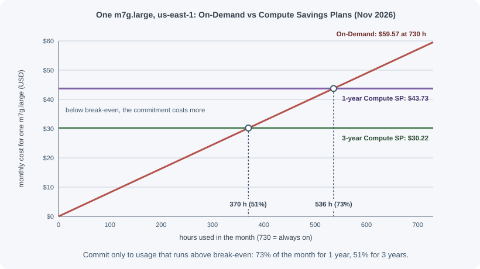

Cost Optimization and Cloud Bills¶
A cloud bill is a running total of every design decision: each instance left on, each log line, each byte that crosses a zone or leaves the network. This lesson shows how to read a bill, attribute it to services and teams with tags and accounts, guard it with budgets and anomaly alerts, and reduce it with rightsizing, scaling to zero, commitments (Savings Plans, reservations, committed use discounts), spot capacity, storage lifecycle rules, egress reduction, NAT gateway alternatives, and log volume control. It ends with FinOps as a practice, unit economics (cost per request and per customer), and the cloud-exit debate with both sides.
The individual "hidden" line items (NAT gateways, egress, cross-zone traffic, load balancer hours, public IPv4 addresses, log ingestion) are introduced in choosing where to run software; this page is about finding and fixing them systematically.
Why it matters¶
On-premises, cost was decided once, when hardware was bought. In the cloud, cost is decided continuously by engineers: a new feature that logs every request, a cron job that copies data between regions, a test environment nobody turns off. Bills therefore drift upward unless someone watches them, and the people best placed to fix them (the engineers who built the system) often never see them.
Cost also shapes the business. Cloud spend is often the largest part of a software company's cost of goods sold, so it sets gross margin. A team that knows its cost per request or per customer can price its product, spot a regression in a pull request, and decide when a commitment or a re-architecture pays off. A team that does not finds out from the finance department, after the money is spent.
Real-world usage¶
- 37signals (cloud exit, 2022-2025). In We stand to save $7m over five years from our cloud exit (February 2023) the company reported a 2022 cloud bill of $3.2 million, bought about $600,000 of Dell servers, projected about $1.5 million a year in savings, and said the move happened "without changing the size of our ops team". The original reasoning is in Why we're leaving the cloud (2022): steady, predictable workloads at their scale were cheaper on owned hardware.
- Andreessen Horowitz (2021). The Cost of Cloud, a Trillion Dollar Paradox sums it up as "You're crazy if you don't start in the cloud; you're crazy if you stay on it." The authors report a practitioner rule of thumb that repatriation costs "one-third to one-half the cost of running equivalent workloads in the cloud", cite Dropbox saving nearly $75 million over two years before its IPO, and also stress that repatriation is complex, needs a strong infrastructure team, and is often partial.
- Netflix (2016). In Completing the Netflix Cloud Migration Netflix wrote that "cost reduction was not the main reason" it moved to AWS: a 2008 database corruption had stopped DVD shipments for three days, and the cloud gave elastic capacity, better availability, and global reach. Its cloud cost per streaming start still ended up a fraction of the data-center cost. The opposite conclusion from 37signals, for a different workload and scale.
- FinOps Foundation. The FinOps definition describes FinOps as "an operational framework and cultural practice which maximizes the business value of technology", built on collaboration between engineering, finance, and business teams, and the FinOps phases are Inform, Optimize, and Operate. Its FOCUS specification defines a common format for billing data that AWS, Azure, and Google Cloud can export.
Popular tools and providers: AWS Cost Explorer, AWS Budgets, AWS Cost Anomaly Detection, AWS Compute Optimizer, AWS Data Exports (Cost and Usage Report 2.0 and FOCUS), Azure Cost Management and Azure Advisor, Google Cloud Billing reports, budgets, and Recommender, OpenCost and Kubecost for Kubernetes, and Infracost for cost estimates in pull requests.
How it works¶
Prices checked November 2026
Prices on this page are AWS us-east-1 list prices in USD, checked in November 2026 from the AWS Price List and the pricing pages linked next to them. They change often; re-check them in the AWS Pricing Calculator, Azure Pricing Calculator, or Google Cloud Pricing Calculator before deciding. Other regions, for example Mumbai (ap-south-1), have different prices; select the region in the calculator.
Where the money goes: a TaskFlow bill¶
Here is a realistic month for TaskFlow API in production on AWS: three
m7g.large API instances behind an Application Load Balancer in two
Availability Zones, a self-managed three-node MongoDB replica set on
m7g.large instances with gp3 volumes, two NAT gateways, attachments in
S3, CloudWatch Logs, and a staging environment that runs all the time.
Compute 3 x m7g.large x 730 h x $0.0816 = $178.70
Database 3 x m7g.large ($178.70) + 600 GB gp3 x $0.08 ($48.00)
+ 600 GB snapshots x $0.05 ($30.00) = $256.70
Load balancer 730 h x $0.0225 + 2 LCU x 730 h x $0.008 = $28.11
NAT gateways 2 x 730 h x $0.045 + 1,000 GB x $0.045 = $110.70
Public IPv4 4 addresses x 730 h x $0.005 = $14.60
Egress (3,072 GB - 100 GB free) x $0.09 = $267.48
Cross-AZ 2,048 GB x $0.01 x 2 directions = $40.96
Logs 300 GB ingested x $0.50 + 300 GB stored x $0.03 = $159.00
S3 2,048 GB x $0.023 = $47.10
Idle staging 3 x t4g.medium x 730 h x $0.0336 ($73.58)
+ 500 GB unattached gp3 x $0.08 ($40.00) = $113.58
---------
Total $1,216.94
Sources: EC2 on-demand pricing, EBS pricing, VPC pricing, Elastic Load Balancing pricing, CloudWatch pricing, S3 pricing.
![Diagram: horizontal bars showing where TaskFlow's $1,216.94 monthly AWS bill goes, largest first, with the lever for each. Internet egress $267.48, 22 percent: CDN, compression, zero-egress storage. Database $256.70, 21 percent: rightsizing, commitments, managed versus self-run. Network plumbing (NAT gateways, load balancer, public IPv4, cross-zone traffic) $194.37, 16 percent: gateway endpoints, fewer NAT gateways, IPv6. Compute $178.70, 15 percent: rightsizing, Graviton, Savings Plans, Spot. Logs $159.00, 13 percent: levels, sampling, retention, cheaper log class. Idle resources $113.58, 9 percent: schedules and cleanup. Storage $47.10, 4 percent: lifecycle rules. The server instances are under a third of the bill.](../where-the-money-goes.svg)
The servers (the API and database instances, $357.40) are under a third of the bill. The rest is data transfer, network plumbing, logs, storage, and waste, which no discount program touches.
Reading a bill¶
A cloud bill is a table of line items. On AWS each line has a
service (AmazonEC2), a usage type (what was metered, such as
BoxUsage:m7g.large, NatGateway-Bytes, DataTransfer-Out-Bytes,
TimedStorage-ByteHrs), an operation, a region, a quantity, and a
rate. Usage types often carry a region prefix (for example EUC1- for
Frankfurt). Reading a bill well means three habits:
- Group by usage type, not only by service. "EC2-Other" in Cost Explorer hides NAT gateways, EBS, data transfer, and public IPv4 addresses. Grouping by usage type shows which meter moved.
- Know the cost views. Unblended cost is what was charged at the rates in effect each hour; amortized cost spreads upfront commitment payments across the period they cover, which is what you want for unit costs; net views subtract discounts and credits.
- Export the raw data. AWS Data Exports delivers the Cost and Usage Report 2.0 or a FOCUS-format export to S3 for SQL analysis; Azure and Google Cloud export billing data to storage or BigQuery. Dashboards are for spotting trends; the raw export is for answering "why".
Cost Explorer's API is itself metered: $0.01 per request (AWS Price List, AWSCostExplorer), so cache its results in scripts.
Tags, accounts, and cost allocation¶
Nobody can fix spend they cannot attribute. Two tools do the attribution:
- Accounts (or subscriptions, projects) per environment and team. The
strongest boundary: everything in the
taskflow-prodaccount belongs to TaskFlow production, tagged or not. AWS Organizations, Azure management groups, and Google Cloud folders group them for billing. - Tags (labels on Google Cloud). Key-value pairs on resources, such as
service=taskflow-api,env=production,team=platform. On AWS, user-defined tags must be activated as cost allocation tags before they appear in billing data. Enforce them in infrastructure as code (default_tagsin the Terraform AWS provider) and with tag policies in AWS Organizations, because resources created by hand are rarely tagged.
Shared costs (a shared Kubernetes cluster, a shared NAT gateway, support fees) need an allocation rule, for example by share of requests or CPU. Showback reports each team's costs to it; chargeback bills the team's budget. Start with showback.
Budgets and anomaly alerts¶
- Budgets compare actual and forecast spend with a threshold and notify by email or SNS. In the AWS Price List, AWS Budgets themselves cost nothing; action-enabled budgets (which can apply an IAM or service control policy, or stop specific EC2 and RDS instances) are free for the first 62 budget-days a month, then $0.10 per budget per day, and scheduled budget reports cost $0.01 per report delivered. Azure Cost Management and Google Cloud billing budgets work the same way. A budget alerts; it does not cap spending unless you wire an action to it.
- Anomaly detection learns each service's normal spend and alerts on unusual jumps, which catches what a monthly threshold misses: a $40 a day increase that would only cross the budget in three weeks. AWS enables a default Cost Anomaly Detection monitor for new Cost Explorer users and describes it as available at no additional cost.
Rightsizing¶
Rightsizing means matching instance size and type to measured use:
- Collect at least two weeks of CPU, memory, network, and disk metrics (memory needs the CloudWatch agent on EC2). Look at p95 or p99, not the average.
- Use the provider's recommendations (AWS Compute Optimizer, Azure Advisor, Google Cloud Recommender) as a starting list, not a verdict.
- Downsize, or change family: Arm-based Graviton instances cost less for
the same size. In us-east-1,
m7i.large(Intel) is $0.1008 an hour andm7g.large(Graviton) is $0.0816, 19% less, for the same 2 vCPU and 8 GiB. A Node.js service usually runs on Arm unchanged, but native modules and container images must be built forarm64. - Move old volume types: gp2 costs $0.10 per GB-month and gp3 $0.08, a
20% saving that
modify-volumeapplies without downtime. - Measure latency and saturation after the change and keep headroom for peaks; rightsizing that causes an outage costs more than it saves.
On Kubernetes, the waste is in requests: pods request more CPU and memory than they use, so nodes fill up with reservations. See scaling and resource management.
Scaling to zero and scheduling¶
The cheapest resource is one that is not running. Two techniques:
- Schedules. Development and staging rarely need to run nights and
weekends. TaskFlow's staging (three
t4g.medium) costs $73.58 a month running all the time; running it 50 hours a week (10 hours on 5 weekdays) instead of 168 saves 70%, about $51.68. Tools: EventBridge Scheduler, AWS Instance Scheduler, Azure automation, or a CI job that scales staging up and down. - Scale-to-zero platforms. Lambda, Cloud Run, Azure Container Apps, and some serverless databases bill nothing (or almost nothing) when idle. For low or spiky traffic they beat always-on capacity; for steady traffic they usually cost more. The crossover is worked out in running backend servers and APIs.
Autoscaling with sensible minimums does the same for production; see autoscaling server fleets.
Commitments: Savings Plans, reservations, and committed use discounts¶
Providers discount steady usage in exchange for a one- or three-year commitment:
- AWS Savings Plans commit to a dollar amount of compute per hour. Compute Savings Plans apply to EC2 "regardless of instance family, instance size, OS, tenancy, or AWS Region" and also to Fargate and Lambda; EC2 Instance Savings Plans are cheaper but tied to one instance family in one region. AWS states savings of up to 72% (What are Savings Plans?). Reserved Instances still exist for services such as RDS and ElastiCache.
- Azure offers reservations and a savings plan for compute; Google Cloud offers resource-based and spend-based committed use discounts and automatic sustained use discounts on some machine families.
For m7g.large in us-east-1 (Linux, no upfront payment), from the AWS
Savings Plans price list:
| Option | Hourly rate | Discount | Monthly cost for one instance (730 h) |
|---|---|---|---|
| On-Demand | $0.0816 | none | $59.57 |
| Compute Savings Plan, 1 year | $0.0599 | 27% | $43.73 |
| Compute Savings Plan, 3 years | $0.0414 | 49% | $30.22 |
| EC2 Instance Savings Plan (m7g), 1 year | $0.054 | 34% | $39.42 |
| EC2 Instance Savings Plan (m7g), 3 years | $0.037 | 55% | $27.01 |
The commitment is paid whether or not you use it, so it only pays off above a break-even utilization:
1-year Compute SP: $43.73 / $0.0816 per hour = 536 hours = 73% of the month
3-year Compute SP: $30.22 / $0.0816 per hour = 370 hours = 51% of the month

How to commit safely:
- Commit to the floor, not the peak. Look at the lowest hourly compute spend over the last 30 to 90 days and cover most of it; leave peaks on on-demand, autoscaling, or Spot.
- Clean up first. Commit after deleting idle resources and rightsizing, or you lock in waste for years.
- Prefer flexible plans when the architecture may change. A team moving from EC2 to Fargate keeps a Compute Savings Plan's discount but strands an EC2 Instance Savings Plan.
- Watch utilization and coverage in the provider's reports every month, and ladder new purchases (smaller plans bought quarterly) instead of one large purchase.
Spot and preemptible capacity¶
Spot capacity is the provider's spare capacity at a deep discount, with the condition that it can be taken back:
| Provider | Discount (provider's statement) | Notice before interruption |
|---|---|---|
| AWS EC2 Spot | Up to 90% off On-Demand (EC2 Spot) | Two minutes, via instance metadata and EventBridge (interruption notices) |
| Google Cloud Spot VMs | Up to 91% (Spot VMs) | Configurable 120 seconds or none (default), then up to 30 seconds of shutdown |
| Azure Spot Virtual Machines | Variable price by region and size (Spot VMs) | 30 seconds, through Scheduled Events |
Good fits: stateless workers that read from a queue, CI runners, batch and data processing, rendering, and extra Kubernetes nodes for stateless pods. Bad fits: databases, single instances serving traffic, and long jobs without checkpoints. Make Spot reliable by diversifying across several instance types and zones, using capacity-optimized allocation, draining work when the notice arrives, and keeping an on-demand baseline.
Storage lifecycle rules¶
Storage grows forever unless something deletes it. Lifecycle rules tier and expire objects by age (see object and file storage and backup and archive storage); snapshot policies prune old EBS snapshots; log retention settings expire logs; container registries need image lifecycle policies. The rule of thumb: every bucket, log group, snapshot schedule, and registry gets a retention setting when it is created.
Egress reduction¶
Egress is often the largest single line (22% of the TaskFlow bill above). In order of impact:
- Cache at a CDN. CloudFront includes 1 TB of transfer out and 10 million requests a month free, fetches from AWS origins free, and charges $0.085 per GB after that in the US; flat-rate plans bundle up to 50 TB. Moving TaskFlow's 2 TB of attachment downloads behind CloudFront changes $184.32 of direct egress into $87.04, saving $97.28.
- Compress. Enable gzip or Brotli for JSON, HTML, CSS, and JavaScript at the CDN or proxy; text responses typically shrink several times over. Serve images in modern formats at the right size.
- Send less. Paginate, select fields, avoid polling (use ETags and conditional requests), and stop sending debug payloads.
- Keep traffic inside the provider and region. Traffic between AWS services in the same region is cheaper than internet egress, and cross-region replication doubles storage and adds transfer. Do not copy data across regions without a reason (residency, DR).
- Choose zero-egress storage for downloads when the files are big and popular (R2, B2 with partner CDNs).
Cross-zone traffic ($0.01 per GB each way) is the price of multi-AZ resilience: reduce it with caching and compression, not by giving up zone redundancy.
NAT gateway alternatives¶
A NAT gateway lets instances in private subnets reach the internet. It costs $0.045 per hour plus $0.045 per GB processed, and it processes all outbound traffic, including traffic to AWS services such as S3 and ECR.
![Diagram: TaskFlow API instances in a private subnet reach four destinations through four paths. Through a NAT gateway to third-party APIs on the internet, at $0.045 per hour plus $0.045 per GB processed. Through an S3 gateway endpoint to S3 and DynamoDB, with no charge. Through interface endpoints (PrivateLink) to ECR, CloudWatch Logs, and Secrets Manager, at $0.01 per hour per zone plus $0.01 per GB. Through an egress-only internet gateway to the IPv6 internet, with no gateway charge, only normal data transfer. One terabyte a month sent to S3 costs $46.08 through the NAT gateway and nothing through the gateway endpoint.](../nat-gateway-alternatives.svg)
| Path | What it is | Cost (us-east-1) | Use for |
|---|---|---|---|
| NAT gateway | Managed NAT per zone | $0.045/h + $0.045/GB | Third-party APIs and general IPv4 internet access |
| Gateway endpoint | A route-table target for S3 or DynamoDB | No charge (gateway endpoints) | All S3 and DynamoDB traffic from private subnets |
| Interface endpoint | A private IP for an AWS service (PrivateLink) | $0.01/h per zone + $0.01/GB | ECR, CloudWatch Logs, Secrets Manager, STS at volume |
| Egress-only internet gateway | Outbound-only IPv6 | No gateway charge (docs); data transfer applies | IPv6-capable destinations |
| NAT instance | NAT on a small EC2 instance you run | Instance hours only | Low traffic, when you accept patching and availability work |
| Public subnets | Tasks with public IPs, no NAT | $0.005/h per IPv4 address | Small setups where public IPs are acceptable with tight security groups |
Sending 1 TB a month to S3 through a NAT gateway costs 1,024 x $0.045 = $46.08; through a gateway endpoint it costs nothing. Interface endpoints cost $0.01 an hour per zone (about $14.60 a month for two zones) plus $0.01 per GB, so they beat NAT processing above roughly 420 GB a month per service. One NAT gateway shared by two zones halves the hourly cost but adds cross-zone charges and makes one zone's failure take out both.
Log volume control¶
Log ingestion is billed per GB ($0.50 per GB in the CloudWatch Logs Standard class, $0.25 in the Infrequent Access class), and log groups default to keeping data forever. Levers:
- Log less:
infoin production,debugonly when switched on, errors always, and successful requests sampled (for example 1%). - Never log health checks and static assets at full volume.
- Set retention on every log group (for example 30 days for application logs) and archive what compliance requires to S3.
- Use the cheaper log class for logs you rarely query, after checking that it supports the features you rely on (it offers a subset of Standard's features).
- Prefer metrics for counts and latencies; a metric is far cheaper than millions of log lines that say the same thing.
TaskFlow ingests 300 GB a month ($150). Sampling successful requests and dropping debug output brings it to 100 GB ($50). See structured logging for how to keep the logs you do write useful.
FinOps basics¶
FinOps is the practice of making cloud cost a shared, continuous concern of engineering, finance, and the business:
- Inform: allocate costs (accounts, tags), show each team its spend, forecast, and compute unit costs.
- Optimize: rightsize, clean up, commit, use Spot, change architecture.
- Operate: budgets, anomaly response, policies (tagging, retention, approved instance types), cost reviews in design and pull requests.
Engineers own usage (what runs and how much); finance or a central team usually owns rates (commitments, negotiated discounts). The cycle repeats: inform, optimize, operate, and back again.
Unit economics¶
Total spend says little on its own: a bill that doubles while traffic triples is good news. Unit costs divide cost by a business driver:
Cost per 1,000 requests = monthly cost / (monthly requests / 1,000)
= $1,216.94 / (30,000,000 / 1,000) = $0.0406
Cost per customer team = $1,216.94 / 400 paying teams = $3.04 per month
Track unit costs over time and per feature. If a plan sells for $20 a team per month, $3.04 of infrastructure is a healthy 15%; if a new feature pushes it to $9, pricing or architecture must change. Use amortized cost so commitment purchases do not distort single months.
Applying the levers to the TaskFlow bill¶
Lever Monthly saving
Delete 500 GB of unattached gp3 volumes $40.00
Run staging 50 h a week instead of 168 $51.68
S3 gateway endpoint for 700 GB of S3 traffic via NAT $31.50
Logs 300 GB -> 100 GB ingested (sampling, no debug) $106.00 ($100 ingest + $6 storage)
CloudFront for 2 TB of attachment downloads $97.28
1-year Compute Savings Plan on the 6 always-on m7g.large $95.05 (6 x ($0.0816 - $0.0599) x 730)
-------
Total $421.51 (35%): $1,216.94 -> $795.43
None of these needed a re-architecture, and only one was a discount. Order matters: clean up, then rightsize, then commit to what is left.
The cloud-exit debate¶
The case for leaving (or never fully moving). Steady workloads at scale pay a premium for elasticity they do not use. 37signals reported a $3.2 million 2022 bill and projected about $7 million of savings over five years from owned servers without growing its operations team, then moved its S3 data to its own storage in 2025. Dropbox moved most storage to its own systems. The a16z analysis estimates that repatriation can cost one-third to one-half as much as equivalent cloud workloads for mature, predictable products. Egress-heavy and storage-heavy businesses feel this first.
The case for staying. The same a16z article calls repatriation "an incredibly complex decision", notes it needs a strong infrastructure team, and says even aggressive repatriators kept a share of workloads in the cloud. Netflix moved to the cloud for availability, elasticity, and global reach rather than cost. Owned hardware means capacity planning, hardware refresh cycles, data center contracts, spare parts, security patching, and on-call for physical failures; spiky or fast-growing workloads and small teams rarely win that trade. Managed services (databases, queues, identity) also replace engineering time that a self-hosted setup has to spend.
The usual answer is "it depends, and it is not binary": start in the cloud; measure unit costs; move steady, heavy, well-understood workloads (storage, bandwidth-heavy delivery, stable compute) to cheaper providers or owned hardware when the numbers and the team support it; keep elastic, experimental, and managed-service-heavy parts where they are. Budget providers such as Hetzner or DigitalOcean are a middle ground; see choosing where to run software.
When to use and when not to use¶
Use budgets, anomaly alerts, and tagging from the first day of any cloud account. Use commitments only for usage that has been steady for months and will stay; use Spot only for interruptible work; re-architect (CDN, endpoints, log pipeline) when a line item is large and structural.
Do not chase cost before you have attribution (you will optimize the wrong thing), commit before cleaning up, cut logs that compliance requires you to keep (move them to cheaper storage instead), or trade away reliability (single AZ, no backups) for small savings.
Which to choose¶
| Scenario | Pick | Runner-up | Why |
|---|---|---|---|
| Side project or portfolio | Free tiers plus a budget alert at a few dollars | A flat-price VPS | A runaway function or public bucket is the main risk; a fixed-price server cannot surprise you |
| Early startup | Tags and accounts per environment, budgets, anomaly alerts; on-demand capacity; a 1-year Compute Savings Plan once usage is steady for a quarter | Startup credits while they last | Flexibility matters more than discounts while the architecture changes; avoid 3-year commitments |
| Steady high traffic | Savings Plans or CUDs covering 70-90% of the baseline, reservations for databases, negotiated pricing for egress | Owned or rented dedicated hardware for the steady core | Predictable load is exactly what commitments and owned hardware reward |
| Spiky traffic | Autoscaling or scale-to-zero platforms, Spot for burst workers, commitments only for the floor | Flat-rate CDN plans for traffic spikes | Paying for peak capacity all month is the biggest waste |
| Global audience | CDN first, regional placement close to users, Compute Savings Plans (region-flexible) | Edge platforms with bundled transfer | Egress and latency dominate; region-flexible commitments follow traffic |
| Compliance-heavy (for example healthcare) | Separate accounts per environment, enforced tagging, retention set by policy with cheaper log and archive tiers | Committed spend on the compliant provider | You often cannot delete logs or move data freely; save on tiers and commitments instead |
| Large files and heavy egress | CDN with flat-rate or committed pricing, zero-egress storage | Negotiated private pricing | Egress is the bill; storage and compute are rounding errors |
| Team with no ops people | Managed services, budgets and anomaly alerts, provider recommendations, Compute Savings Plans | A developer platform with simple pricing | Avoid savings that need operations work (NAT instances, Spot fleets, self-hosted databases) |
![Diagram: decision flow for which cost lever to pull first. Is a large share of spend untagged or unowned? Yes leads to attribution first: accounts per environment, cost allocation tags, budgets. No leads to: are resources idle or oversized? Yes leads to delete, schedule, and rightsize (Compute Optimizer, Graviton, gp3). No leads to: is there a steady baseline for a year or more? Yes leads to committing to that baseline with Savings Plans, reservations, or committed use discounts. No leads to: is there interruptible work such as batch, CI, or queue workers? Yes leads to Spot or preemptible capacity with diversification. No leads to architecture levers: egress (CDN, compression), NAT endpoints, log volume, and storage lifecycle. A banner adds: repeat every month, inform, optimize, operate.](../cost-lever-decision-flow.svg)
Practical examples¶
Cost guardrails in Terraform¶
Default tags on every resource, a monthly budget with actual and forecast alerts, and an anomaly subscription:
# infra/cost-guardrails.tf
terraform {
required_version = ">= 1.11"
required_providers {
aws = {
source = "hashicorp/aws"
version = "~> 6.0"
}
}
}
provider "aws" {
region = "us-east-1"
default_tags {
tags = {
service = "taskflow-api"
env = "production"
team = "platform"
}
}
}
resource "aws_budgets_budget" "monthly" {
name = "taskflow-production-monthly"
budget_type = "COST"
limit_amount = "1300"
limit_unit = "USD"
time_unit = "MONTHLY"
notification {
comparison_operator = "GREATER_THAN"
threshold = 80
threshold_type = "PERCENTAGE"
notification_type = "ACTUAL"
subscriber_email_addresses = ["cloud-costs@example.com"]
}
notification {
comparison_operator = "GREATER_THAN"
threshold = 100
threshold_type = "PERCENTAGE"
notification_type = "FORECASTED"
subscriber_email_addresses = ["cloud-costs@example.com"]
}
}
# Accounts that enabled Cost Explorer recently already have a default
# AWS-services monitor; import it instead of creating a second one.
resource "aws_ce_anomaly_monitor" "services" {
name = "taskflow-services"
monitor_type = "DIMENSIONAL"
monitor_dimension = "SERVICE"
}
resource "aws_ce_anomaly_subscription" "daily" {
name = "taskflow-cost-anomalies"
frequency = "DAILY"
monitor_arn_list = [aws_ce_anomaly_monitor.services.arn]
subscriber {
type = "EMAIL"
address = "cloud-costs@example.com"
}
threshold_expression {
dimension {
key = "ANOMALY_TOTAL_IMPACT_ABSOLUTE"
match_options = ["GREATER_THAN_OR_EQUAL"]
values = ["50"]
}
}
}
default_tagsstamps the three tags on every resource this provider creates, so tagging does not depend on memory.- The forecast notification fires early in the month when the trend points past the limit, while there is still time to act.
- The anomaly subscription emails a daily summary of anomalies with a total impact of $50 or more.
Activate the tag keys for billing once per organization:
aws ce update-cost-allocation-tags-status \
--cost-allocation-tags-status TagKey=service,Status=Active TagKey=env,Status=Active TagKey=team,Status=Active
Endpoints, log retention, and the cheaper log class¶
# infra/network-and-logs.tf: cost-aware defaults for TaskFlow's VPC and logs
resource "aws_vpc_endpoint" "s3" {
vpc_id = aws_vpc.main.id
service_name = "com.amazonaws.us-east-1.s3"
vpc_endpoint_type = "Gateway"
route_table_ids = aws_route_table.private[*].id # S3 traffic skips the NAT gateway
}
resource "aws_cloudwatch_log_group" "api" {
name = "/taskflow/api"
retention_in_days = 30
}
resource "aws_cloudwatch_log_group" "access" {
name = "/taskflow/api-access"
retention_in_days = 14
log_group_class = "INFREQUENT_ACCESS" # $0.25 instead of $0.50 per GB ingested
}
Sampling successful requests in TaskFlow API¶
// src/middleware/access-log.js: log every error, sample successful requests
export function accessLog(logger, { sampleRate = 0.01 } = {}) {
return (req, res, next) => {
const started = process.hrtime.bigint();
res.on("finish", () => {
const failed = res.statusCode >= 400;
if (!failed && Math.random() >= sampleRate) return; // drop 99% of successes
logger.info(
{
method: req.method,
route: req.route?.path ?? req.path,
status: res.statusCode,
durationMs: Number(process.hrtime.bigint() - started) / 1e6,
sampled: !failed,
},
"request",
);
});
next();
};
}
Request counts and latency percentiles come from metrics, so the sampled logs only need to show examples. Mark sampled lines so nobody counts them as totals.
Finding idle and outdated resources¶
# Unattached EBS volumes (billed although no instance uses them)
aws ec2 describe-volumes --filters Name=status,Values=available \
--query "Volumes[].{id:VolumeId,sizeGb:Size,type:VolumeType}" --output table
# Elastic IPs not associated with anything (public IPv4 is billed either way)
aws ec2 describe-addresses --query "Addresses[?AssociationId==null].PublicIp"
# gp2 volumes that can move to gp3 (20% cheaper) without downtime
aws ec2 describe-volumes --filters Name=volume-type,Values=gp2 --query "Volumes[].VolumeId"
aws ec2 modify-volume --volume-id vol-<id> --volume-type gp3
# Log groups with no retention (kept forever)
aws logs describe-log-groups --query "logGroups[?retentionInDays==null].logGroupName"
A monthly unit-cost report¶
A script that divides last month's amortized cost for everything tagged
service=taskflow-api by the requests the load balancer served:
// scripts/unit-cost.js: TaskFlow API cost per 1,000 requests (Node 24, AWS SDK v3)
import { CostExplorerClient, GetCostAndUsageCommand } from "@aws-sdk/client-cost-explorer";
import { CloudWatchClient, GetMetricDataCommand } from "@aws-sdk/client-cloudwatch";
const ce = new CostExplorerClient({ region: "us-east-1" }); // Cost Explorer's API lives in us-east-1
const cw = new CloudWatchClient({ region: process.env.AWS_REGION ?? "us-east-1" });
const now = new Date();
const start = new Date(Date.UTC(now.getUTCFullYear(), now.getUTCMonth() - 1, 1));
const end = new Date(Date.UTC(now.getUTCFullYear(), now.getUTCMonth(), 1));
const day = (d) => d.toISOString().slice(0, 10);
const cost = await ce.send(
new GetCostAndUsageCommand({
TimePeriod: { Start: day(start), End: day(end) }, // End is exclusive
Granularity: "MONTHLY",
Metrics: ["AmortizedCost"], // spreads commitment payments over the period
Filter: { Tags: { Key: "service", Values: ["taskflow-api"] } },
}),
);
const dollars = Number(cost.ResultsByTime[0].Total.AmortizedCost.Amount);
const metrics = await cw.send(
new GetMetricDataCommand({
StartTime: start,
EndTime: end,
MetricDataQueries: [
{
Id: "requests",
MetricStat: {
Metric: {
Namespace: "AWS/ApplicationELB",
MetricName: "RequestCount",
Dimensions: [{ Name: "LoadBalancer", Value: process.env.ALB_DIMENSION }],
},
Period: 86400,
Stat: "Sum",
},
},
],
}),
);
const requests = metrics.MetricDataResults[0].Values.reduce((sum, v) => sum + v, 0);
console.log("| Month | Amortized cost | Requests | Cost per 1,000 requests |");
console.log("|---|---|---|---|");
console.log(
`| ${day(start).slice(0, 7)} | $${dollars.toFixed(2)} | ${requests.toLocaleString("en-US")} | $${((dollars / requests) * 1000).toFixed(4)} |`,
);
Run it monthly from CI with short-lived credentials (OIDC), writing the table to the job summary:
# .github/workflows/unit-cost.yml
name: unit-cost
on:
schedule:
- cron: "0 8 3 * *" # 08:00 UTC on the 3rd, once last month's data has settled
workflow_dispatch:
permissions:
contents: read
id-token: write # lets the job request an OIDC token for AWS
jobs:
report:
runs-on: ubuntu-latest
steps:
- uses: actions/checkout@v7
with:
persist-credentials: false
- uses: actions/setup-node@v7
with:
node-version-file: .nvmrc # Node 24, same as production
cache: npm
- run: npm ci
- uses: aws-actions/configure-aws-credentials@v6
with:
role-to-assume: ${{ vars.AWS_COST_READER_ROLE_ARN }}
aws-region: us-east-1
- name: Write the unit cost to the job summary
env:
ALB_DIMENSION: ${{ vars.TASKFLOW_ALB_DIMENSION }}
run: node scripts/unit-cost.js >> "$GITHUB_STEP_SUMMARY"
The role needs only read access:
{
"Version": "2012-10-17",
"Statement": [
{
"Effect": "Allow",
"Action": ["ce:GetCostAndUsage", "cloudwatch:GetMetricData"],
"Resource": "*"
}
]
}
OIDC trust policies and pinning actions are covered in pipeline and supply chain security.
Best practices¶
- Create accounts per environment and enforce tags from day one; activate cost allocation tags.
- Set a budget with actual and forecast alerts and an anomaly monitor on every account, routed to people who can act.
- Review the bill monthly by usage type, not only by service.
- Track unit costs (per request, per customer) next to product metrics.
- Clean up and rightsize before buying commitments; commit to the floor and ladder purchases.
- Use Spot for interruptible work only, diversified across types and zones.
- Give every bucket, log group, snapshot schedule, and registry a retention rule when you create it.
- Put a CDN in front of public content, compress text, and keep S3 and DynamoDB traffic on gateway endpoints.
- Make cost visible in design reviews and pull requests (for example with a cost estimate of infrastructure changes).
In production¶
- The bill jumped 40% this month and nobody knows why. Detect: Cost Explorer grouped by usage type and day shows a step change on one meter, or an anomaly alert fired. Cause: often a new feature's logging, a job copying data across regions, or an autoscaling group stuck at maximum. Fix: find the meter and the tagged owner, fix the cause, and add a budget or anomaly monitor for that service if it was missing.
- NAT gateway data processing is a top-five line item.
Detect:
NatGateway-Bytesis high; VPC flow logs show most NAT traffic going to S3 or ECR address ranges. Cause: AWS-service traffic from private subnets going through the NAT gateway. Fix: add S3 and DynamoDB gateway endpoints and interface endpoints for high-volume services such as ECR. - Savings Plan utilization dropped to 60%. Detect: the Savings Plans utilization report shows unused commitment every hour. Cause: a migration (to Fargate, a new instance family, or another region) left an EC2 Instance Savings Plan without matching usage, or traffic fell. Fix: nothing refunds a commitment; buy flexible Compute Savings Plans next time, commit to the floor, and move matching usage back where possible.
- Batch jobs restart from the beginning several times a day. Detect: job logs show repeated restarts at Spot interruption times; EventBridge shows "EC2 Spot Instance Interruption Warning" events. Cause: Spot capacity reclaimed, jobs without checkpoints, a single instance type. Fix: checkpoint progress, handle the two-minute notice, diversify instance types and zones, and keep an on-demand floor.
- Forty percent of spend is untagged.
Detect: Cost Explorer grouped by the
servicetag shows a large "No tag key" bucket. Cause: resources created in the console or by tools without default tags; tags not activated for billing. Fix: activate the tags, adddefault_tagsand tag policies, and allocate shared costs with an agreed rule. - CloudWatch Logs storage cost grows every month.
Detect:
TimedStorage-ByteHrsfor CloudWatch rises steadily; log groups show no retention. Cause: the default retention keeps logs forever. Fix: set retention on every group, export what compliance needs to S3, and alarm on log groups without retention. - Cross-AZ data transfer costs more than the database.
Detect:
DataTransfer-Regional-Bytesis large and grows with traffic. Cause: chatty service-to-database or service-to-service calls across zones, uncompressed payloads, or replication of large data. Fix: cache, compress, batch calls, and use zone-aware routing where the platform supports it, without removing zone redundancy.
Important terminology¶
- Usage type: The meter on a bill line (for example
NatGateway-Bytes). - Unblended / amortized cost: Cost at the rates charged each hour / with upfront commitment payments spread over their term.
- Cost allocation tag: A resource tag activated for use in billing data.
- Showback / chargeback: Reporting costs to a team / billing them to the team's budget.
- Budget / budget action: A spending threshold that alerts / that can also apply a policy or stop resources.
- Rightsizing: Matching resource size and type to measured use.
- Savings Plan / reservation / committed use discount: A one- or three-year commitment in exchange for lower rates.
- Coverage / utilization: The share of usage covered by commitments / the share of commitments actually used.
- Spot (preemptible) capacity: Discounted spare capacity that the provider can reclaim with short notice.
- Unit cost: Cost divided by a business driver such as requests or customers.
- FinOps: The practice of shared, continuous ownership of cloud cost across engineering, finance, and the business.
- FOCUS: The FinOps Open Cost and Usage Specification, a common format for billing data.
Common mistakes and misconceptions¶
- Looking only at compute when data transfer, plumbing, and logs are half the bill.
- Buying three-year commitments before cleaning up and rightsizing.
- Believing a budget stops spending; without an action it only alerts.
- Using Spot for stateful or single-instance production services.
- Cutting logs that compliance requires instead of moving them to cheaper storage.
- Giving up multi-AZ to save cross-zone transfer.
- Treating cost as finance's problem; engineers decide most of it.
- Comparing total spend month to month without normalizing by traffic or customers.
Revision questions¶
- Why is grouping a bill by usage type more useful than grouping by service? Give two meters hidden inside "EC2-Other".
- Explain unblended and amortized cost, and which you would use for a unit-cost report.
- A NAT gateway processes 3 TB (3,072 GB) a month of traffic to S3. How much does an S3 gateway endpoint save? (Answer: 3,072 x $0.045 = $138.24 a month.)
- Calculate the break-even utilization of a 1-year Compute Savings Plan at $0.0599 per hour for an instance that costs $0.0816 on demand. (Answer: $0.0599 / $0.0816 = 73%, about 536 of 730 hours.)
- Which workloads suit Spot capacity, and how do you make them survive interruptions?
- Your staging environment costs $300 a month and is used 45 hours a week. What would a schedule save? (Answer: about $300 x (1 - 45/168) = $220 a month.)
- Give three ways to reduce internet egress for an API and a file download feature.
- Argue both sides of leaving the cloud for a company with steady load, and name the facts you would need before deciding.
Further learning¶
- AWS Well-Architected Framework: Cost Optimization Pillar
- FinOps Foundation: FinOps Framework phases
- AWS Savings Plans user guide
- Google Cloud committed use discounts
- Azure Spot Virtual Machines
- AWS Pricing Calculator, Azure Pricing Calculator, Google Cloud Pricing Calculator
- Related: capacity planning, cloud building blocks
- Next: hosting interview questions and answers. Back to the hosting and cloud platforms overview.